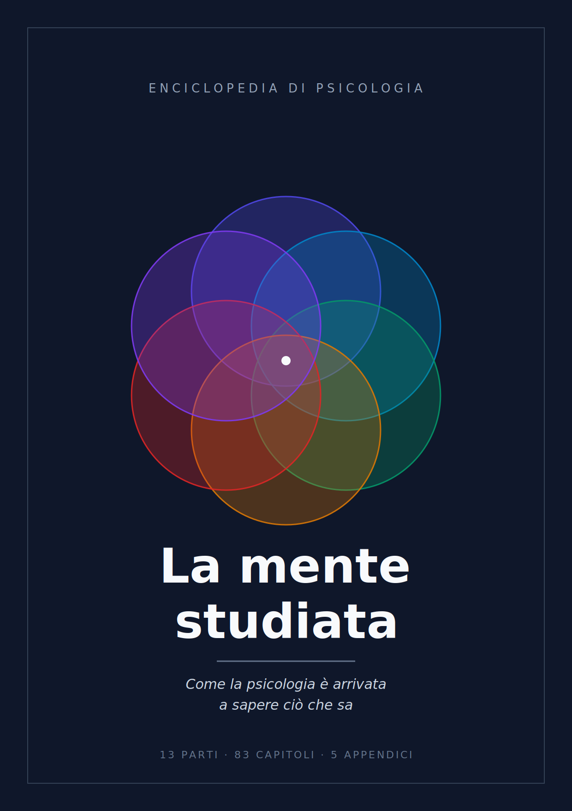

La mente studiata
Come la psicologia è arrivata a sapere ciò che sa
Inizia a leggereParte I. Il problema del conoscere la mente
Parte II. La mente come profondità: la tradizione psicoanalitica
- Capitolo 7 — Prima della psicologia: la mente come oggetto filosofico
- Capitolo 8 — L'ipotesi dell'inconscio
- Capitolo 9 — Il lavoro del sogno
- Capitolo 10 — Rimozione, difese, ritorno del rimosso
- Capitolo 11 — Pulsioni, ripetizione, aggressività
- Capitolo 12 — Il delirio come costruzione con un nucleo di verità
- Capitolo 13 — Che cosa regge della psicoanalisi
Parte III. La mente come comportamento: il programma comportamentista
Parte IV. Il substrato: sistema nervoso e comportamento
- Capitolo 20 — Il neurone come unità di segnale
- Capitolo 21 — La sinapsi
- Capitolo 22 — Neurotrasmettitori e psicofarmacologia
- Capitolo 23 — Architettura del cervello
- Capitolo 24 — Come si guarda dentro un cervello che funziona
- Capitolo 25 — Plasticità
- Capitolo 26 — Sonno e ritmi circadiani
- Capitolo 27 — Geni, ambiente e la loro interazione
Parte V. Percezione e attenzione
Parte VI. Memoria e apprendimento
Parte VII. Cognizione, ragionamento, errori sistematici
Parte VIII. Emozione e motivazione
Parte IX. Sviluppo
- Capitolo 54 — Studiare un soggetto che non parla
- Capitolo 55 — Il neonato competente
- Capitolo 56 — Stadi dello sviluppo cognitivo
- Capitolo 57 — Attaccamento
- Capitolo 58 — Teoria della mente e cognizione sociale in sviluppo
- Capitolo 59 — Linguaggio in sviluppo
- Capitolo 60 — Adolescenza e traiettorie lungo la vita
Parte X. Personalità e differenze individuali
Parte XI. Psicologia sociale
Parte XII. La sofferenza psichica come banco di prova
Parte XIII. Le tre domande che restano
- Capitolo 78 — Coscienza: perché è un problema e non solo un mistero da risolvere
- Capitolo 79 — Che cosa misurano gli esperimenti sulla coscienza
- Capitolo 80 — Libero arbitrio: che cosa dicono i dati
- Capitolo 81 — Responsabilità senza libero arbitrio?
- Capitolo 82 — Identità personale nel tempo
- Capitolo 83 — Che cosa la psicologia sa, che cosa crede di sapere, che cosa non sa